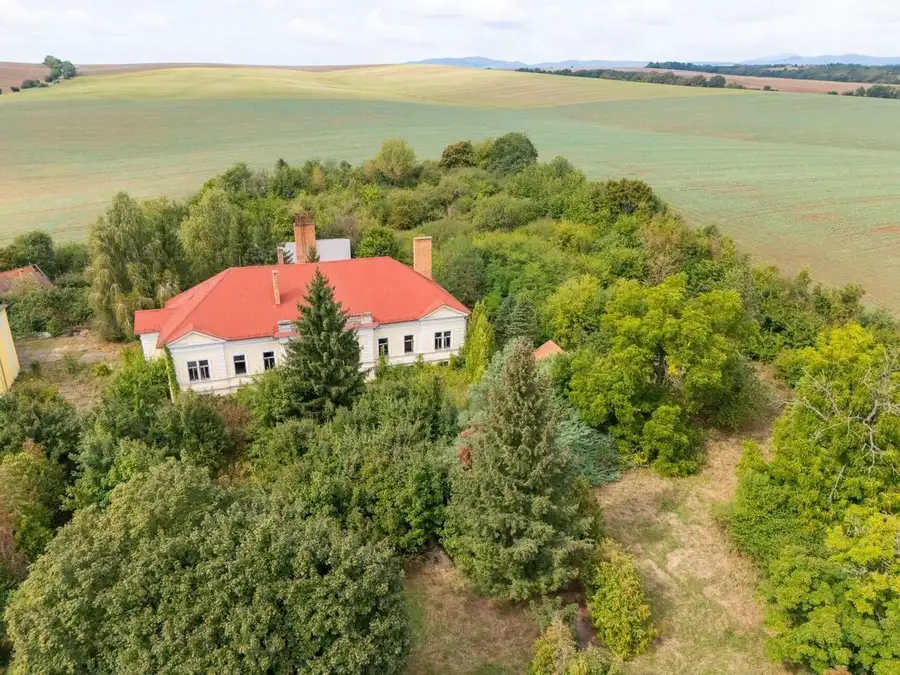
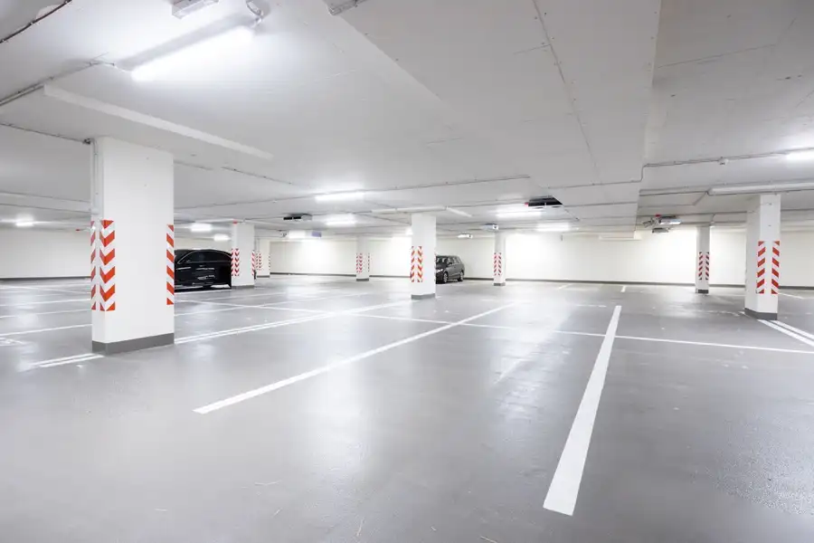

MIKELSSEN - Na predaj krásna chata z dreveného masívu pri Belianskom jazere
Banská Štiavnica
- Plocha414 m²
- StavNovostavba
- VlastníctvoOsobné
- Energetická triedaB
O nehnuteľnosti
Realitná kancelária MIKELSSEN ponúka exkluzívne na predaj jedinečnú nehnuteľnosť v srdci Štiavnických vrchov s priamym prístupom k jazeru. Zrubová chata z dreveného masívu je postavená na pozemku o ploche 2 600 m2. Pozemok je situovaný na konci slepej ulice na okraji lesa obkolesujúceho Beliansky tajch. Chata bola postavená v roku 2010 a disponuje 11 izbami a 2 veľkými garážami na prízemí.DISPOZIČNÉ RIEŠENIE- celková podlahová plocha 414 m2 (pôdorys je súčasťou fotogalérie)- 3 podlažia: suterén tvoria 2 veľké garáže, denná časť na prízemí a nočná časť na poschodí- denná čast na prízemí: obývačka s jedálňou a kuchyňou, veľká komora, 2 spálne, kúpeľňa s WC- nočná čast na poschodí: 8 spální, 2 kúpeľne s WC- veľká terasa s prístreškom s jedálenskym sedením a murovanou pecou na grilovanie alebo pečenieTECHNICKÉ PARAMETRE- celá chata je postavená z masívneho dreva (slovenský smrek)- zateplenenie ovčou vlnou- elektrické kúrenie + veľké krbové kachle- kvalitné drevené euro okná s izolačným 2 sklom- kuchyňa a jedálenské sedenie z dreveného masívu boli vyrobené na zákazku v Taliansku- kuchynská pracovná doska na linke a ostrovčeku je vyrobená z talianskeho mramoru- sedlová strecha, krytina šindel (plastový) s imitáciou dreva- kamerový systém prepojený s mobilnou aplikáciou- alarmINŽINIERSKE SIETE- na pozemku sa nachádza prípojka elektriny 230V aj 400V- chata má vodovodné pripojenie na úžitkovú voda zo studne, pitná voda je v súčasnosti riešená formou výdajníka na barelová vodu- internetové pripojenie od Telekomu- odpadová voda je riešená formou zberu do retenčnej nádoby o objeme 1 800 litrov- prístupová komunikácia je asfaltová vo vlastníctve štátuVÝHODY- výnimočná nehnuteľnosť v krásnom prostredí- úžasný pocit súkromia vďaka polohe na okraji lesa na konci slepej ulice - priamy prístup do jazera- veľká terasa s prístreškom a murovanou pecou - historické centrum Banskej Štiavnice do 10 minút autom- atraktívna lokalita v rámci Slovenska s veľkým potenciálom rozvoja cestovného ruchuLOKALITAOkolie Banskej Štiavnice ako jedno z mála turistických oblastí na Slovensku poskytuje bohaté možnosti celoročnej rekreácie počnúc športovými aktivitami, kultúrnymi akciami, cez výbornú gastronómiu či vínne cesty v blízkom okolí až po relax vo welness centrách či známom aquaparku.Nádherné prostredie Štiavnických vrchov je ideálne miesto na pešiu ako aj horskú či cestnú cyklistiku s množstvom značených trás a single trailov. Lokalita je známa umelo vytvorenými jazerami - tajchami, ktoré boli súčasťou banskej činnosti a v súčasnosti sú využívané najmä ako prírodné kúpaliská alebo aj rybárčenie. V blízkosti sa nachádza obľúbená Banská Štiavnica s množstvom reštaurácii, kultúrnych podujatí a známych kultúrnych pamiatok, ktoré sú zapísané v UNESCO. Pre milovníkov zimných športov je tu lyžiarsky areál Salamander alebo celoročne prístupný aquapark Vyhne. Lotalita má veľký potenciál na rozvoj cestovného ruchu vďaka polohe v strede Slovenska, dobrej dopravnej dostupnosti (z Bratislavy 2 hodiny autom) a dlhoročne vybudovanej tradícii kultúrno spoločenských podujatí.CENA649 900 EUR (vrátane provízie a právneho servisu RK)Bližšie informácie o cene Vám radi poskytneme na čísle +421 948 377 690 alebo emailom na jablonka@mikelssen.sk a radi pre Vás zorganizujeme obhliadku. Text, fotografie a 3D obhliadka sú autorským dielom a majetkom realitnej kancelárie MIKELSSEN.
Parametre
| Bezpečnosť | Bezpečnostné dvere, Alarm, Kamerový systém |
|---|---|
| Doprava | Cyklistická infraštruktúra, Cesta |
| Druh | Chata, drevenica, zrub |
| Dátum zverejnenia | 12. 6. 2026 |
| Energetická náročnosť | Z klasických materiálov |
| Energetický certifikát budovy | B |
| Energie | 100 |
| Orientácia | Južná |
| Plocha pozemku | 2600 m² |
| Podpivničenie | Nedostupné |
| Počet garáží | 2 |
| Počet izieb / miestností | 11 |
| Počet kúpeľní | 3 |
| Počet nadzemných podlaží | 2 |
| Počet pivníc | 1 |
| Počet podzemných podlaží | 1 |
| Počet vonkajších parkovacích miest | 4 |
| Príprava teplej vody | Prietokový ohrievač (elektrický) |
| Prístupová komunikácia | Asfaltová |
| Rok kolaudácie | 2010 |
| Rok poslednej rekonštrukcie | 2010 |
| Rok výstavby | 2010 |
| Stav nehnuteľnosti | Novostavba |
| Telekomunikácie | Telefón, Internet, Satelit |
| Terás | 1 |
| Terén pozemku | Mierne svahovitý |
| Typ | Predaj |
| Typ konštrukcie | Drevená |
| Vlastníctvo | Osobné |
| Vybavenie | Technická miestnosť, Vonkajší krb, Krb, Altánok / posedenie, Terasa, Pivnica, Garáž, Vonkajšie parkovacie miesto, Sklad, Špajza, Záhrada, Sauna, Zimná záhrada, Dielňa, Nabíjacia stanica elektromobilov |
| Vykurovanie | Lokálne, Krb |
| Zastavaná plocha | 138 m² |
| Zdroj tepla | El. priamo-vykurovacie telesá |
| Úžitková plocha | 414 m² |
Kde to je


Mohlo by Vás zaujímať

DomNové10 189 900 €MIKELSSEN - Na predaj kaštieľ na pozemku 18 100 m2 pri Dudinciach Terany 1170 m² Realitná kancelária MIKELSSEN ponúka exkluzívne na predaj kaštieľ v zastavanej časti obce Terany (Horné Terany) vzdialenej len 5 minút autom od…
Komerčné priestoryNové2 49 900 €MIKELSSEN - SKY PARK na predaj garážové státie vo veži I Staré Mesto, Bratislava 13 m² Realitná kancelária MIKELSSEN Vám ponúka exkluzívne na predaj garážové státie v novostavbe SKY PARK veži 1 na -2. poschodí. Parkovacie miesto o…